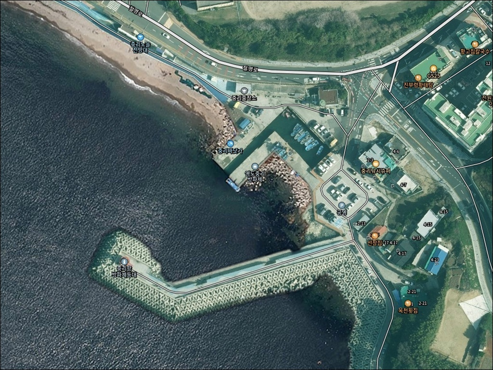
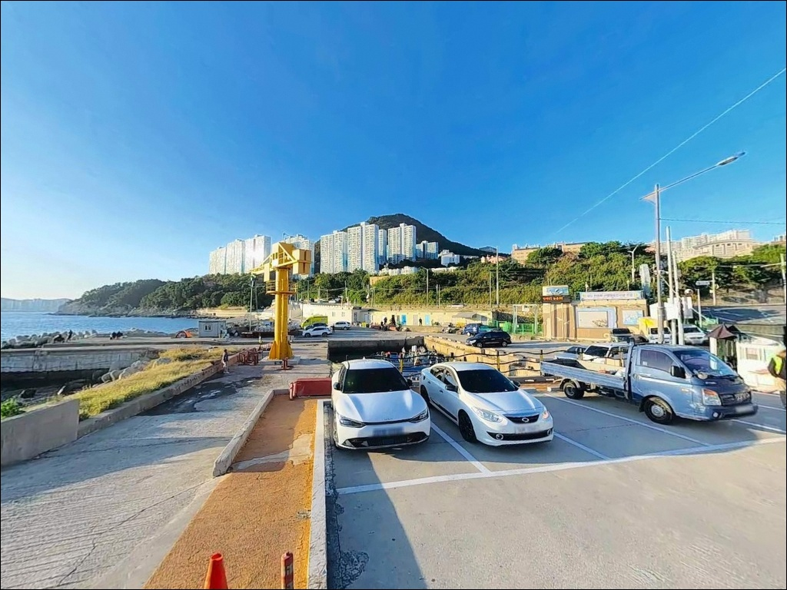
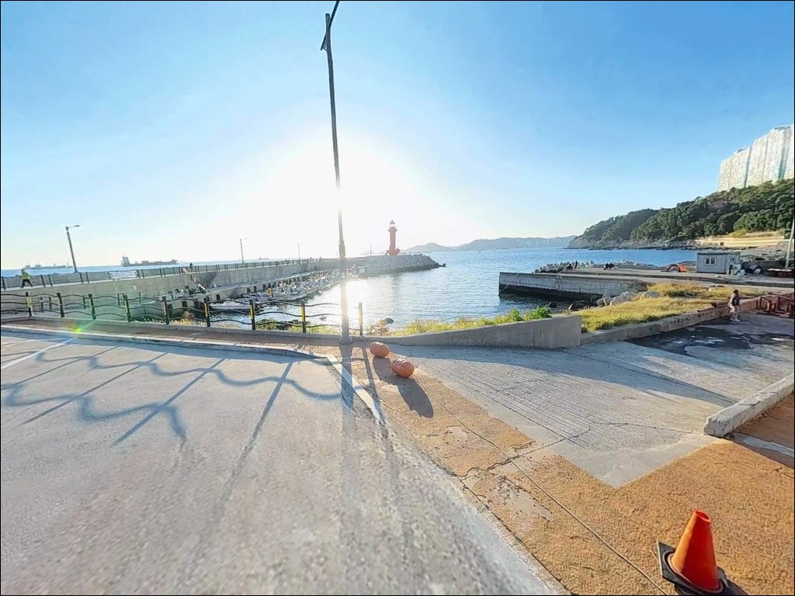
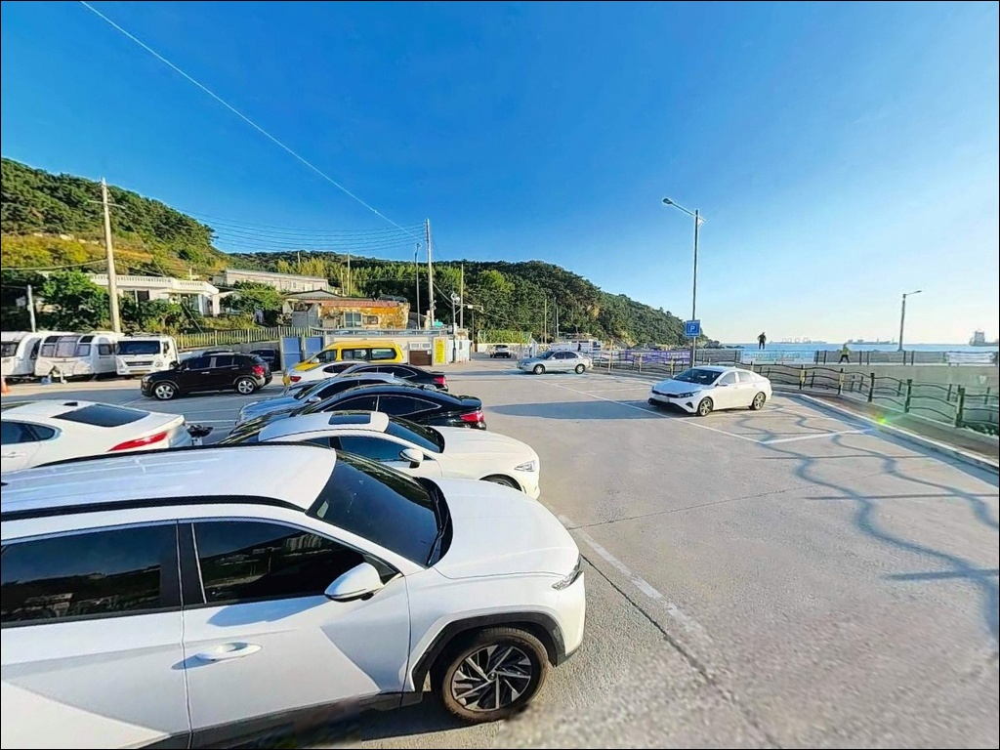
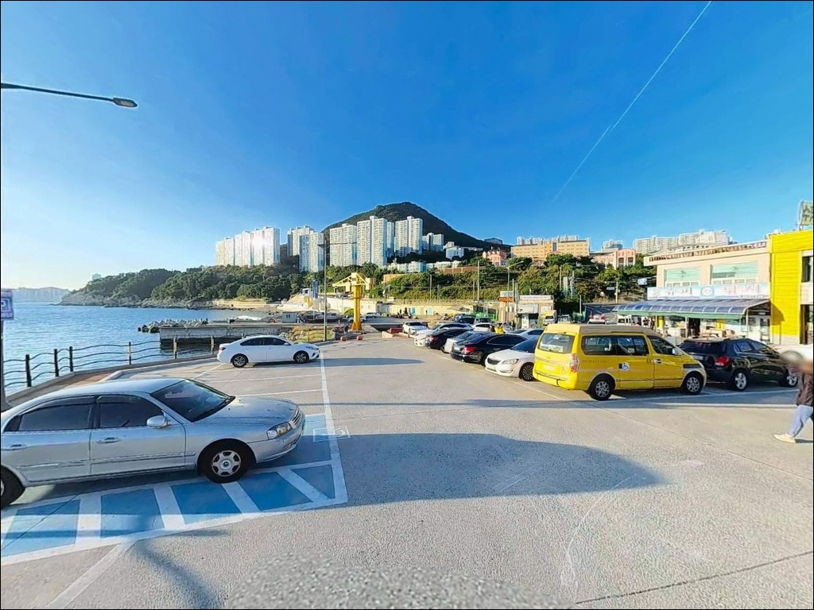
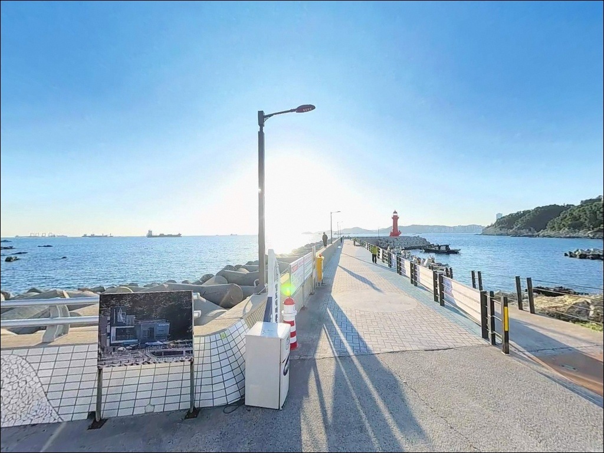
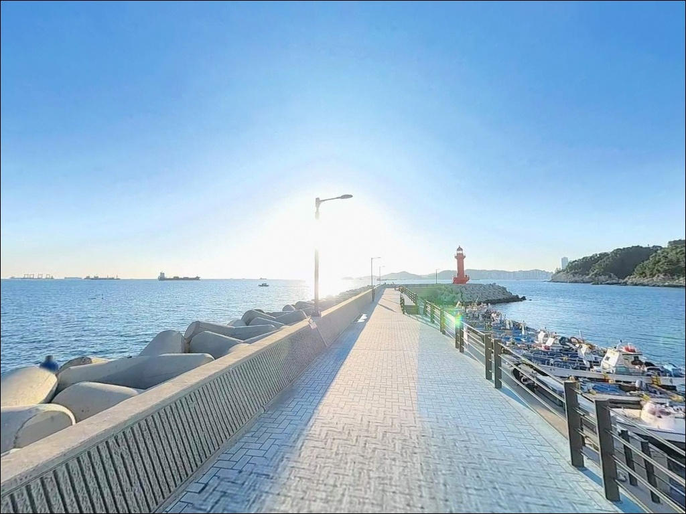
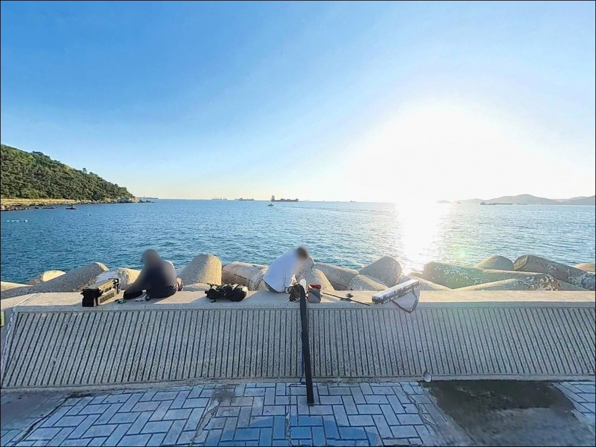
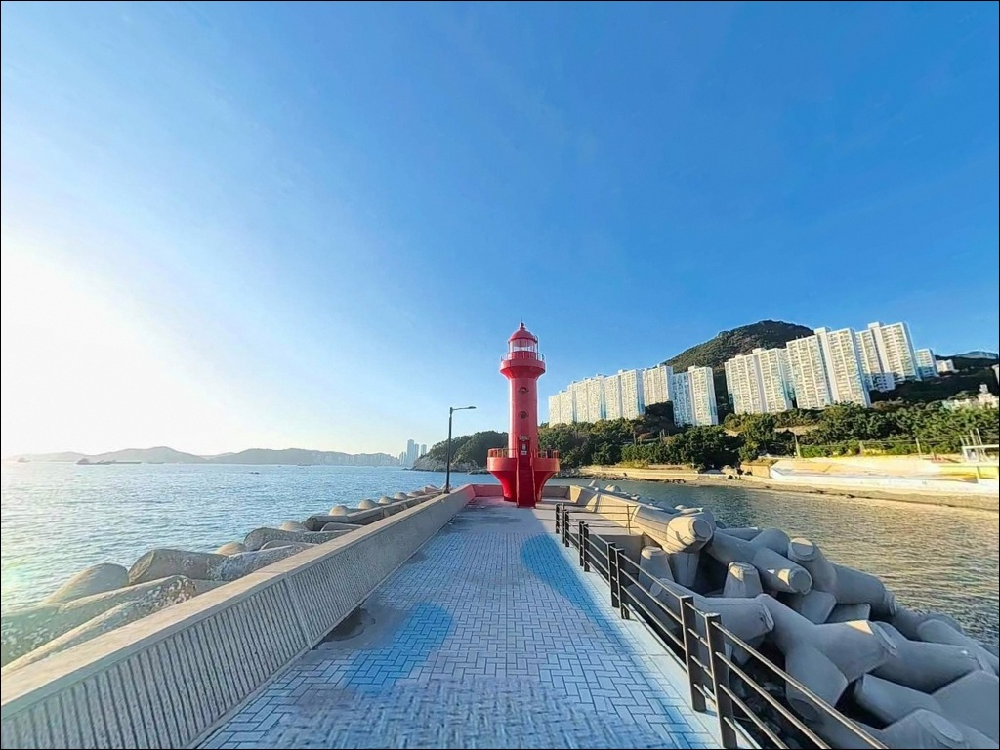

외항과 내항 수심이 2배 다른 영도 중리방파제 포인트
이 페이지에는 광고(제휴 링크 포함)가 있으며, 광고 링크를 통해 구매하면 운영자가 판매 수익 또는 수수료를 받을 수 있습니다. 포인트 사진: 카카오맵 스카이뷰·로드뷰. 이 페이지의 지도·사진 이미지는 카카오맵의 실제 서비스 이미지와 다를 수 있습니다.


포인트 안내
중리항(중리방파제)
부산 영도구 동삼동 639-11
외항을 내항으로 착각하거나,
테트라포드 구간인지 콘크리트 발판 구간인지
미리 파악하지 않고 장비만 들고 가면
자리 선정부터 다시 해야 하는 상황이 생깁니다.
중리방파제는 외항과 내항의 수심 차이가
두 배 이상 벌어지는 구조여서,
어떤 방식으로 낚시할지를 먼저 정한 다음
자리를 고르는 순서가 맞습니다.
이 글은 중리방파제의 지형 구조,
낚시 방식별 적합 구간, 진입 동선,
그리고 도심 방파제로서의 차박 여건에 집중합니다.
조황 단정이나 특정 어종 보장은
이 글의 범위에 포함되지 않습니다.

1. 진입 동선과 포인트 접근성
중리방파제는 절영해안산책로 진입부와
동선이 겹치는 구조입니다.
내비게이션에 영도 해녀문화전시관 또는
중리선착장을 입력하면
방파제 진입 지점과 가장 가깝게 안내됩니다.
동삼1동 해안도로를 따라 접근하며
전 구간 포장도로로 연결되어 있습니다.
방파제 진입부와 인근 주차 구획은
회차 공간이 충분하게 확보된 편입니다.
대형 차량도 진입과 회차 자체에는
큰 어려움이 없는 구조입니다.
방파제 바로 앞에 중리항 공영주차장이 있으며,
종일 기준 약 3,000원 수준의 유료 운영 체계입니다.
방파제 끝단 등대까지 도보 접근이 가능합니다.
다만 외항 테트라포드 구간은
발판이 고르지 않고 경사가 급한 구간이 포함되어 있어
처음 방문하는 낚시인이라면
낮 시간에 먼저 지형을 확인하고
야간 자리를 정하는 편이 안전합니다.

2. 차박 환경과 야간 체류 여건
중리방파제는 동삼주공아파트 단지 등
주거밀집지역과 인접한 도심형 방파제입니다.
야간에도 차량 통행과 인근 주민 왕래가 있으며,
관광객이 오가는 해녀촌과 전망대가
방파제 입구 근처에 위치해 있습니다.
완전한 독립형 차박보다는
낚시 당일 출조 베이스 성격으로 활용하는 것이
현실에 맞는 방식입니다.
야간 조명은 가로등과 등대, 주변 상가 불빛으로
일정 수준 확보되는 환경입니다.
방파제 끝단 빨간 등대는
5초 간격으로 연속 2회 점멸하며
야간 방향 식별에 도움이 됩니다.
다만 외항 끝단과 갯바위 구간은
조명이 미치지 않는 구간이 있어
개인 헤드랜턴은 반드시 지참해야 합니다.
중리선착장 옆 자갈해안은
수심이 급격히 깊어지는 구조입니다.
야간 체류 시 이 구간 주변에서
발을 헛디디지 않도록
낚시 범위를 사전에 정해두는 편이 좋습니다.


3. 주변 편의시설 및 인프라 현황
중리항 공영주차장 내 또는 인근에
공중화장실이 설치되어 있습니다.
방파제 바로 앞에 해녀촌이 영업하고 있으며,
간단한 식당과 분식점, 낚시용품 판매점도
인근에 위치해 있습니다.
편의점은 반경 1km 이내에 복수로 분포합니다.
CU 영도중리점이 방파제에서 도보권에 있으며,
동삼동 일대 시가지 방향으로
생활 인프라 접근성은 부산 방파제 중
상위권 수준입니다.
보급 걱정 없이 낚시에만 집중할 수 있는
도심 포인트의 장점이 여기에 있습니다.
응급 상황 발생 시 영도대교를 건너면
복음병원, 부산대학교병원이 차량 20분 이내에
위치합니다.

4. 방문 전 반드시 챙겨야 할 준비사항
중리방파제 방문 전에 가장 먼저 확인할 것은
물때와 기상입니다.
영도 인근 해역은 낙조류 지속시간이
약 7시간으로 창조류보다 길어,
조류 방향과 세기가 하루 중 일정하게
변화하는 구간입니다.
바다타임에서 동삼동 기준 물때를 확인하고
출발 시각을 맞추는 것이 기본 전략입니다.
기상청 예보 기준으로
풍속 7m/s 이상 예보가 있는 날에는
방파제 끝단 진입을 자제해야 합니다.
외항 테트라포드 구간은 파도와 조류 영향이
내항보다 훨씬 직접적으로 미칩니다.
미끄럼 방지 신발과 구명조끼는
선택이 아닌 기본 장비입니다.
해녀촌 인접 구역에서는 해녀 작업 중
물질 구역에 낚시 채비를 투입하지 않는 것이
이 포인트에서 지켜야 할 기본 매너입니다.
방파제 주변에서 발생한 쓰레기는
전량 차량으로 반출해야 합니다.

5. 외항 테트라 구간에서 루어 조과가 달라지는 조건
중리방파제 끝단은 외항 조류가 집중되는 구간으로
루어·에깅 반응이 살아나는 자리입니다.
방파제는 외해를 정면으로 마주하는 구조로
끝단까지 테트라포드가 연속 배치되어 있고,
외항 발밑 수심은 6m 이상,
멀리 던질 경우 10m 이상의 수심층이
형성되는 구조입니다.
수심 변화가 가장 급격하게 나타나는 구간은
방파제 끝단과 테트라포드 직벽 경계입니다.
이 구간 아래에 갯바위와 여밭이 발달해 있어
조류가 흐를 때 어종의 이동 경로가
자연스럽게 형성됩니다.
바닥은 사질과 여밭이 섞인 구조로
채비 길이 조절이 조과를 가르는 변수입니다.
반면 내항은 수심 2~4m 수준의 얕고 잔잔한 구간입니다.
발판이 콘크리트 평지로 안정적이어서
초보 낚시인이나 아이와 함께 방문하는 경우에
내항 쪽이 현실적인 선택입니다.
외항은 조과 집중 구간, 내항은 접근성 우선 구간으로
성격이 명확하게 나뉩니다.
최신 조황은 출조 전에 검색해 보시기 바랍니다.


6. 이 포인트 지형에 맞는 낚시 스타일
외항 테트라포드 구간과 끝단에서는
루어낚시가 가장 효율적인 방식입니다.
볼락을 대상으로 한 아징 채비가
이 포인트 지형 조건과 잘 맞으며,
소형 지그헤드에 소프트웜 조합으로
테트라포드 주변 암초 경계를 탐색하는 방식이
기본 운용법입니다.
야간 시간대에 활성도가 올라오는 경향이 있습니다.
에깅은 방파제 끝단에서 외항 방향으로
캐스팅하는 방식이 기본입니다.
수심이 충분히 확보되는 구조로
에기 채비가 힘을 발휘할 수 있는 조건입니다.
초여름부터 가을까지가 무늬오징어·갑오징어
에깅 활용도가 높은 시기입니다.
베이트 유입 여부가 이날 조과를 결정하는
핵심 변수입니다.
릴찌낚시는 외항 수심 변화 구간을 중심으로
공략하는 방식이 이 포인트에 맞습니다.
감성돔과 벵에돔을 기대해볼 수 있는
지형 조건을 갖추고 있으며,
크릴을 미끼로 조류 흐름에 찌를 흘리는
운용이 기본입니다.
원투낚시는 내항과 외항 초입 구간 모두 가능하며,
붕장어와 도다리를 노리는 방식에
바닥 탐색 중심의 운용이 어울립니다.

7. 대안 포인트와 플랜 B 동선
중리방파제 외항 조류가 너무 강하거나
공영주차장이 만차 상태일 때
첫 번째로 이동할 대안은
영도 신방파제(동삼동)입니다.
낚시인들이 '신방'이라 부르는 곳으로
전갱이와 붕장어 조황이 기대되는 구간이며,
중리방파제에서 차량 10분 이내 거리입니다.
감지해변 일대는 중리방파제와
절영해안산책로로 연결되는 구간입니다.
강한 조류가 흐르는 야간에는
전갱이와 무늬오징어, 농어를
기대해볼 수 있는 구간으로 알려져 있습니다.
갯바위 낚시 분위기를 선호한다면
감지해변 자갈마당이 현실적인 대안입니다.
태종대 갯바위는 중리방파제에서
차량 약 15분 거리의 영도 남단 포인트입니다.
수심이 깊고 조류가 강해
감성돔과 벵에돔을 노리기 좋은 구간으로,
에깅 시즌에 함께 묶어
하루 동선을 구성하기에 적합합니다.

외항과 내항을 구분할 줄 알면
중리방파제가 달라 보입니다
루어나 에깅, 릴찌낚시를 즐기는 낚시인이라면
중리방파제 외항 구간의 수심과 조류 조건은
충분히 매력적인 구조입니다.
방파제 끝단 빨간 등대, 해녀촌과의 연계,
절영해안산책로와의 접근성까지 더하면
부산 도심에서 가장 접근하기 쉬운
방파제 낚시 포인트 중 하나입니다.
반면 테트라포드 발판의 위험성과
도심 특성에 따른 차박 제약은
사전에 파악하고 가야 할 조건입니다.
물때 확인, 기상 판단, 자리 선택 순서,
이 세 가지를 갖추고 간다면
영도의 조류와 수심을 제대로
활용할 수 있는 포인트입니다.
낚시 후 차 안에서 하룻밤 머무는
조용한 차박을 원한다면
중리방파제보다 태종대 외곽이나
영도 아미르공원 인근 주차 공간이
더 나은 선택일 수 있습니다.
중리는 낚시와 도심 인프라를 동시에 쓰는
당일 출조형 낚시인에게 가장 잘 맞는 포인트입니다.